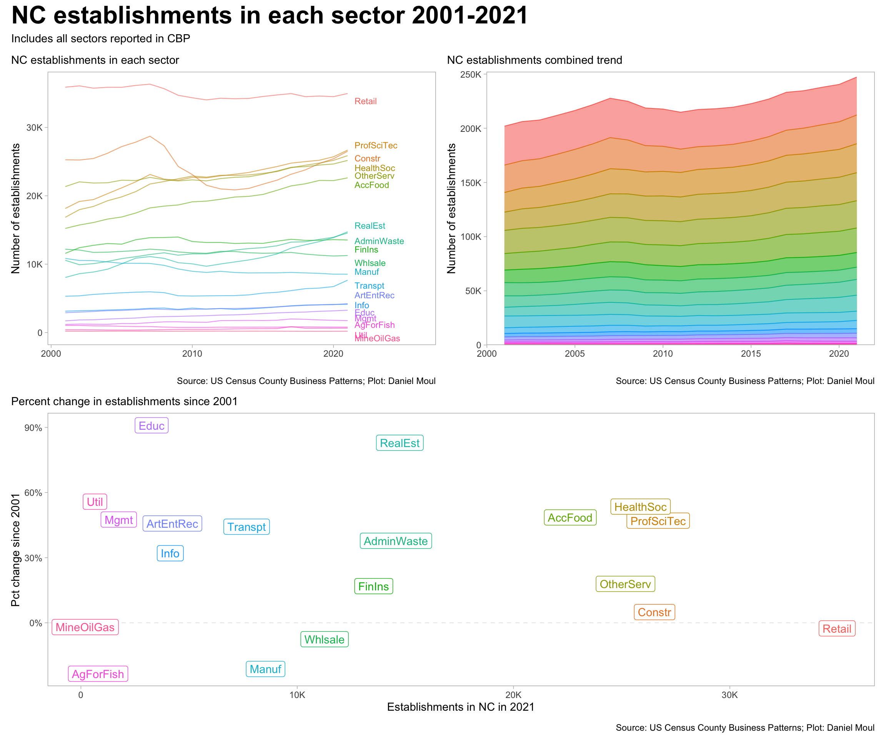
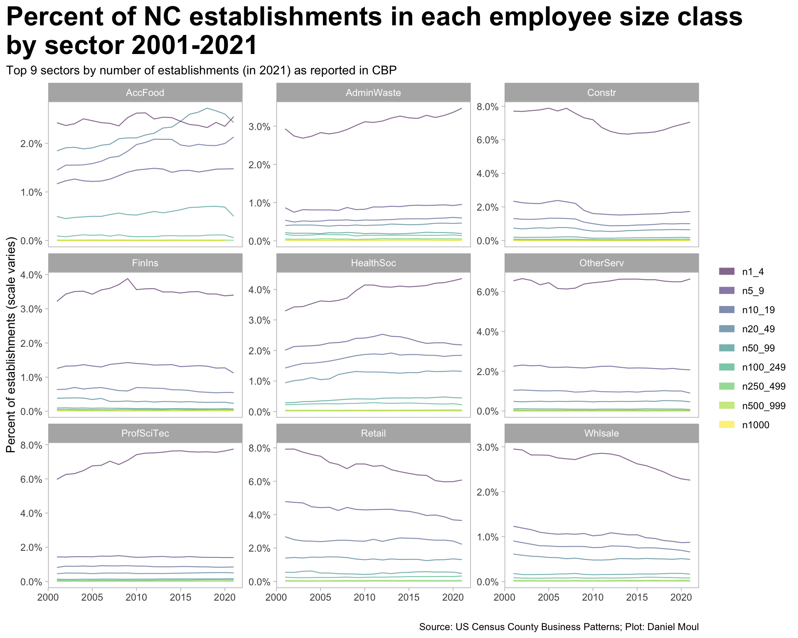

The County Business Patterns data uses the general term establishment to refer to corporations, partnerships, non-profit organizations, etc.
The CBP data includes establishments categorized by employee size class. The range is embedded in the name. For example, n1_4 includes a count of establishments with 1-4 employees. The category n1000 includes establishments with 1,000 or more employees.
The plots below that reference sectors use the sector abbreviations listed in Section 1.6.
2.2 Number of establishments in NC
As one might expect, there are many more establishments with a small number of employees. Each subsequent employee size class includes fewer establishments. Compare the number of workers in each employee size class in Figure 1.3.
Figure 2.2: NC establishments by sector compared to USA 2021
2.3 Trends in the number of establishements
The 2008 financial crisis led to a significant drop in the number of construction, real estate, and retail establishments. In most sectors, establishments were able to shed employees during the crisis and stay in business (compare Figure 1.8), presumably due in part to the Paycheck Protection Program and other assistance from Federal1 and state2 governments.
Show the code
data_for_plot <- d_est_sector_total_state_nc |>filter(naics_abbr !="OtherInd") |>mutate(naics_abbr =fct_reorder(naics_abbr, -est) ) |>mutate(est_fist_year = est[year ==min(year)],est_last_year = est[year ==max(year)],.by =c("naics")) |>mutate(pct_est_diff = est_last_year / est_fist_year -1)labels_for_plot <- data_for_plot |>filter(year ==max(year))p1 <- data_for_plot |>filter(naics_abbr !="Other") |>ggplot() +geom_line(aes(x = year, y = est, color = naics_abbr, group = naics_abbr),linewidth =0.4, alpha =0.6, show.legend =FALSE) +geom_text_repel(data = labels_for_plot,aes(x = year +0.5, y = est, label = naics_abbr, color = naics_abbr),direction ="y", hjust =0, vjust =0.5, size =3,min.segment.length =unit(1, "cm"), force_pull =100,seed =123,show.legend =FALSE) +scale_y_continuous(labels =label_number(scale_cut =cut_short_scale())) +expand_limits(x =2026,y =0) +guides(color =guide_legend(override.aes =c(linewidth =3))) +labs(subtitle ="NC establishments in each sector",x ="",y ="Number of establishments",color =NULL,caption = my_caption )p2 <- data_for_plot |>filter(naics_abbr !="Other") |>ggplot() +geom_area(aes(x = year, y = est, color = naics_abbr, fill = naics_abbr, group = naics_abbr),linewidth =0.4, alpha =0.6, show.legend =FALSE) +scale_y_continuous(labels =label_number(scale_cut =cut_short_scale()),expand =expansion(mult =c(0, 0.02))) +expand_limits(#x = 2026,y =0) +guides(color =guide_legend(override.aes =c(linewidth =3))) +labs(subtitle ="NC establishments combined trend",x ="",y ="Number of establishments",color =NULL,caption = my_caption )p3 <- data_for_plot |>filter(year ==2021, est !=0) |>ggplot(aes(est, pct_est_diff, color = naics_abbr)) +geom_hline(yintercept =0, lty =2, size =0.2, alpha =0.2) +geom_label(aes(label = naics_abbr),show.legend =FALSE, hjust =0.5, vjust =0.5) +scale_x_continuous(labels =label_number(scale_cut =cut_short_scale())) +scale_y_continuous(labels =label_percent()) +labs(subtitle =glue("Percent change in establishments since 2001"),x ="Establishments in NC in 2021",y ="Pct change since 2001" )(p1 + p2) / p3 +plot_annotation(title ="NC establishments in each sector 2001-2021",subtitle ="Includes all sectors reported in CBP",caption = my_caption )

Figure 2.3: NC establishments in each sector 2001-2021
How has the proportion of establishments by employee size class changed over time? In general, the smallest establishments come and go faster than larger establishments.
Show the code
data_for_plot <- d_est_state_nc_size_classes |>mutate(naics_abbr =fct_lump(naics_abbr, 9, w = value)) |>filter(naics_abbr !="Other")data_for_plot |>ggplot() +geom_line(aes(x = year, y = pct_est, color = est_size_class, group = est_size_class),linewidth =0.4, alpha =0.6) +scale_y_continuous(labels =label_percent(accuracy =0.1)) +facet_wrap(. ~ naics_abbr, scales ="free_y") +guides(color =guide_legend(override.aes =c(linewidth =3))) +labs(title ="Percent of NC establishments in each employee size class\nby sector 2001-2021",subtitle ="Top 9 sectors by number of establishments (in 2021) as reported in CBP",x ="",y ="Percent of establishments (scale varies)",color =NULL,caption = my_caption )

Figure 2.4: Percent of NC establishments by employee size class 2001-2021 for top sectors
2.4 Table
Sorted by percent difference in number of 2001 to 2021.
Show the code
d_est_sector_total_state_nc |>filter(naics_abbr !="OtherInd") |>mutate(naics_abbr =fct_reorder(naics_abbr, -est) ) |>mutate(est_fist_year = est[year ==min(year)],est_last_year = est[year ==max(year)],.by =c("naics")) |>mutate(pct_est_diff = est_last_year / est_fist_year -1) |>filter(year ==2021) |>select(naics, naics_abbr, est_2021 = est, pct_est_2021 = pct_est, pct_est_diff_since_2001 = pct_est_diff) |>arrange(-pct_est_diff_since_2001) |>mutate(rowid =row_number()) |>gt() |>tab_header(md(glue("**NC sector establishments in 2021 and growth since 2001**","<br>*Sorted by growth since 2001*"))) |>tab_source_note(md("*US Census County Business Patterns; analysis by Daniel Moul*")) |>tab_options(table.font.size =10) |>fmt_number(columns =c(est_2021),decimals =0) |>fmt_percent(columns =c(pct_est_2021, pct_est_diff_since_2001),decimals =0)
Table 2.1: NC state establishments by sector 2021
NC sector establishments in 2021 and growth since 2001 Sorted by growth since 2001
naics
naics_abbr
est_2021
pct_est_2021
pct_est_diff_since_2001
rowid
61----
Educ
3,269
1%
91%
1
53----
RealEst
14,743
6%
83%
2
22----
Util
648
0%
56%
3
62----
HealthSoc
25,876
10%
54%
4
72----
AccFood
22,625
9%
49%
5
55----
Mgmt
1,750
1%
48%
6
54----
ProfSciTec
26,689
11%
47%
7
71----
ArtEntRec
4,228
2%
46%
8
48----
Transpt
7,661
3%
44%
9
56----
AdminWaste
14,564
6%
38%
10
51----
Info
4,131
2%
32%
11
81----
OtherServ
25,178
10%
18%
12
52----
FinIns
13,539
5%
17%
13
23----
Constr
26,522
11%
5%
14
21----
MineOilGas
198
0%
−2%
15
44----
Retail
34,963
14%
−3%
16
42----
Whlsale
11,266
5%
−8%
17
31----
Manuf
8,537
3%
−21%
18
11----
AgForFish
793
0%
−23%
19
US Census County Business Patterns; analysis by Daniel Moul